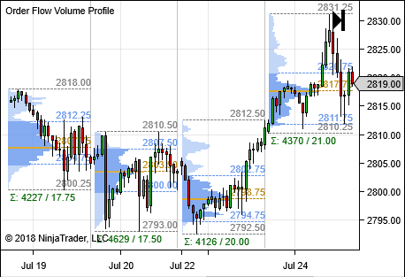

|
<< Click to Display Table of Contents >> Order Flow Volume Profile |


|
Order Flow Volume Profile
|
<< Click to Display Table of Contents >> Order Flow Volume Profile |
|
 Order Flow Volume Profile Concepts
Order Flow Volume Profile Concepts
Profile TypesOrder Flow Volume Profile has many settings which can be customized to achieve several types of profiles. There are 3 modes for selecting what you want to use to generate the profile.
Profile Components
|
Session |
Bars |
Composite |
 |
||
This is a repeating profile created for each session defined. The profile by default is displayed below the bars and across all bars that make up the session. You can group multiple sessions by defining the property 'Sessions' greater then 1 (count is run from left to right, so forward). |
When Bars is selected, one profile per bar is rendered. Space is added between the bars so that the profile is readable. This space is defined in the 'Visual' section below 'Profile width (px)' which is a defaulted to 100. You can group multiple bars by defining the property 'Bars' greater then 1. |
A composite profile is a single profile drawn as an overlay on the entire chart that is composed of data defined by the 'Compose by' sub property that is exposed when this mode is selected. |
Multiple display modes can be used. By default there are 5 render modes available which is changed with the 'Display mode' property on the indicator.
Standard
Single defined color profile rendering display volume by price information. The color can be selected by modifying the 'Color for profile' property. There are two properties to define the opacity. 'Profile opacity' sets the opacity above and below the value area and 'Value area opacity' sets the opacity used when drawing the area in the value area. |
|
Buy sell The volume bar now split by buy volume and sell volume as classified per the Delta type property.
Note: This mode requires 'Tick' resolution data. |
|
Delta
Displays the standard volume profile and overlays buy/sell data delta as classified per the Delta type property. This display mode highlights imbalances in buy/sell volume.
Note: This mode requires 'Tick' resolution data |
. |
Heat
Displays a gradient in the profile based on the highest volume and the lowest volume in the profile. High volume areas are emphasized in this mode. |
|
Outline
Displays the volume profile with only the outline of the profile being plotted. |
|
Time color
Every 30 minutes a new color is plotted and displayed in the profile. The profile color is defined in the properties 'Times' section. You can see what time of day the majority of the volume occurred in the mode. |
The initial balance is an optional feature which will enable plots to show you what the current range, POC, and Value area a set number of minutes into the session. A typical use case is so that you can compare what the POC and VA was early on in the profile and make a comparison to where it ended up. The initial balance range needs to have the property 'Initial balance time (in minutes)' set to a non-zero value. Once 'Initial balance time' is defined the there are 3 lines which will be enabled and can be configured, you can enable only the lines you wish to see to display the 'Initial Range', 'Initial POC', and 'Initial Value Area'.

1.Initial Range: This is the range of the profile used in the initial profile calculation that was traded during the 'initial balance time (in minutes)'
2.Initial POC: The value of where the point of control (POC) is located during the 'initial balance time (in minutes)'
3.Initial Value Area: The value area during the 'initial balance time (in minutes)'
The developing POC and Value Area is an optional feature which when enabled will show you bar by bar how these value change overtime for the profile.
1.Developing POC: For each bar in the chart the value of the POC is plotted so you can see the change over time.
2.Developing Value Area: For each bar in the chart the value of the value area high and value area low so you can see the change over time.
The extended "Naked" Point of Control and Value Area will take any POC of Value Area of a profile and plot it forward from the end time of the profile until such time as the price is traded again in the future. Uncovered or 'naked' are expected to be 'filled' sometime in the future and may be an area of support or resistance. There visibility and plot properties are set in the 'Lines' section
1.Naked POC
2.Naked Value Area
Note: If a line is enabled, but it is not seen, it may be under another enabled line. |
Price ProfilesPrice profiles displays a letter or block if the underlying instrument trades inside of a specific time window. These time windows are 30 minute in length and if a single trade occurs in the time range a single block or letter is plotted. NinjaTrader supports price charts on intraday charts only. Its recommended to use a minute base chart such as 60 minute, 240 minute, 480 minute base chart types. Typically the 'Hide Bars' property is enabled for price profiles. This allows you to focus on the price profile on its own, the candles are no longer needed once you become proficient reading the price profile since both time and price is displayed once you memorize the time/color chart below.
To easily see where the session has it's Open / (developing) Close NinjaTrader displays separate O / C markers. These letters are then excluded in the time/color letter progression for the session.
Scaling the Price ProfileProfile scaling may be required to get your price profile to render as you expect. When rendering in letter mode if there is not enough space to render a letter which would be large enough to read on the screen the profile will fall back to block rendering mode. In this case we need to adjust chart scaling and ticks per level depending on the instrument you wish to plot the price profile on.
1.To adjust the distance between profiles, use the time scale drag in the time axis to compress and decompress the underling bars. If you've reached the maximum your able to adjust using the time axis, try adjusting the underling bars up or down as needed, start with a 60 minute chart and increase the minute range by double each time to compress the chart in the time axis. 2.To adjust the price scale use left click and drag in the price label area to adjust price scaling and put the chart into 'fixed' scaling mode. You can hold down left mouse and drag and CTRL on the keyboard to move the range being displayed to focus in on the area you wish to focus on. See the section 'Navigating a Chart' for more information on working with price scales.
Price profile timesIt is important to look into the 'Order Flow + Volume Profile' properties, specifically the 'Times' section to understand the time slices reported by the tool and what color and letter is associated. The time displayed in converted to your local time zone and is a fixed frame of referenced from starting at 8:00 CST. This time is arbitrarily picked and provides all instruments to share the same time slice, therefore the letter 'A' and associated color will always be the same calendar day and not effected by the individual instrument, this allows comparison between charts based on a fixed time scale. The color for each time slice is customizable, once you have it defined
Reference Table
|
 Understanding Composite Profiles
Understanding Composite Profiles
Composite Profiles
|
Weeks Back |
The number of weeks back to be factored in this profile. |
Days Back |
The number of days back from the current day to include in the profile. |
Start Date |
Manually specify a start date for the profile. |
Chart |
All the data available in the charts 'Start date' and 'End Date' are displayed in the profile. |
Visible Screen Range |
The profile will dynamically update based on the data determined from the first bar in view in the chart and the last bar in view on the chart. Moving the chart from left to right will change what data is displayed in the profile. |
Note: Composite profiles using 'minute' data being placed on a chart which has bar ranges less then 1 minute is not compatible. In this scenario tick resolution must be used. |
Note: You want to make sure that the data you wish to compose a profile of actually exists on your chart to have a complete profile. You may need to right click on the chart > Data Series > and increase the days to load for the chart. |
 Understanding the Order Flow Volume Profile Drawing Tool
Understanding the Order Flow Volume Profile Drawing Tool
Order Flow Volume Profile Drawing Tool
|
Note: The Order Flow Plus Volume Profile drawing tool will not work on time ranges (historical data) outside the current selected playback range. |
 Order Flow Volume Profile 'Set up' Parameters
Order Flow Volume Profile 'Set up' Parameters
|
 Order Flow Volume Profile 'Visual' Parameters
Order Flow Volume Profile 'Visual' Parameters
|
 Order Flow Volume Profile 'Lines' Parameters
Order Flow Volume Profile 'Lines' Parameters
The 'Lines' section defined all available and configurable line plots. Each line property once extended can have its Color, Dash style, Width, Visible, and Label property defined.
|
 Order Flow Volume Profile 'Label' Parameters
Order Flow Volume Profile 'Label' Parameters
The 'Lines' section defined all available and configurable line plots. Each line property once extended can have its Color, Dash style, Width, Visible, and Label property defined.
|